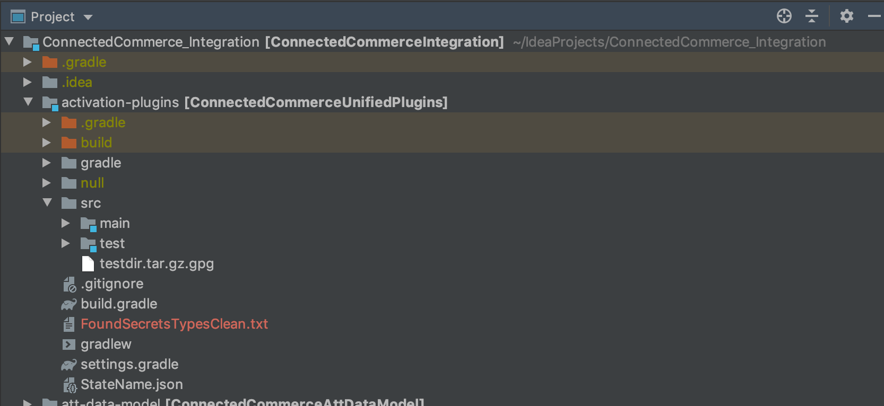

Demo
Previous sprint ?/? -> ?%Current sprint ?/? -> ?%
Topics
- Removal of Secrets from Unit Testing Module of Activation Plugins
- ESB AppleCare TradeIn Migration
Removal of Secrets from Unit Testing Module of Activation Plugins
Introduction
- The main reason for this work was to remove all the compromised information found in this module using GRAVITY in order to finally be able to decompress the unit tests and facilitate the work of all the groups related to PAM
Steps Followed from Confluence Guide
- Decompress the module
- Generate secret list from keywords
- Sift through the list of secrets
- Create gravity.yml file
- Erase or replace the key words found in the code
- Add Secret Variables to gravity.yml if found
Project Structure
List Of Secrets
Result
Conclusions
- There was no need of create gravity variables
- All the secret information was replace for dummy information or erased
- There is no need to include urls as gravity variables
- Every time we create a new unit test we have to make sure that none of the secret information is being saved
SECOND TOPIC!!
ESB AppleCare TradeIn Migration
Introduction
- As part of the remaining work for the ESB migration we worked in the APPLECARE api TradeIn to finish with the migration
| Canonical API | AppleCare |
|---|---|
| TradeIN | DONE |
CODE TIME!!
SPRINT CHALLENGES
- Learn the creation of gravity variables and the sift of almost 2000 lines of compromised information for the secrets removal.